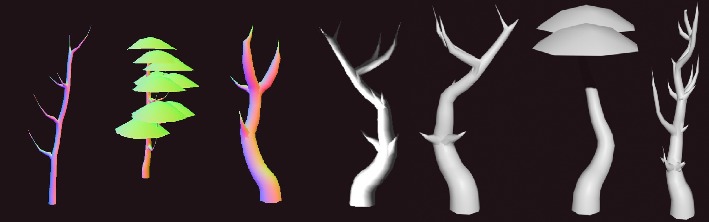
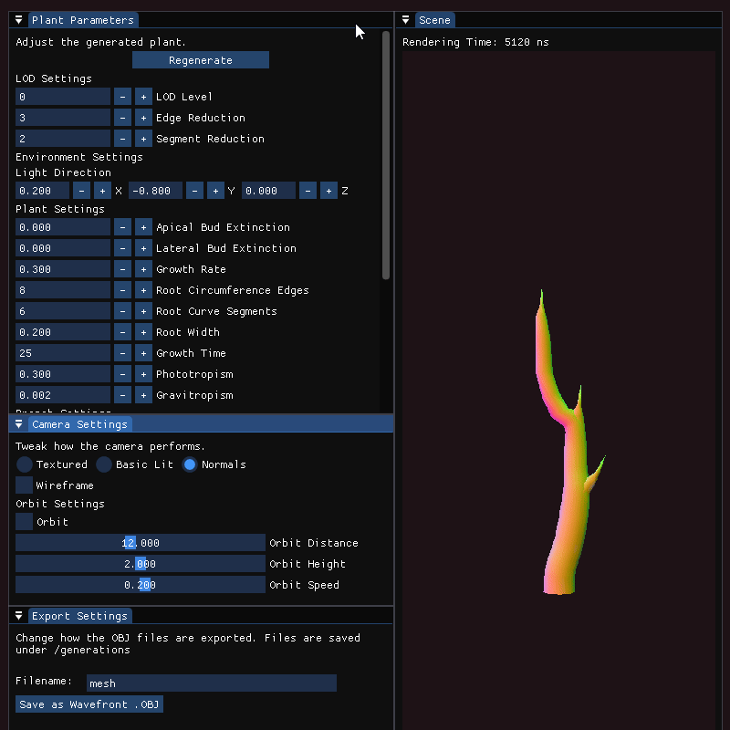

OpenGL Tree Generation
Skills used in this project
- Project Planning and Time Management
- OpenGL, ImGui and C++
- Research Skills
- Object-Oriented Programming (OOP)
Summary
This was the final individual project for my degree, the topic I chose being "Procedural Generation of Level of Detail Meshes for Trees". Within the project I had to perform detailed research and analysis on existing and potential solutions, develop my own solution based on my research and then perform in-depth analysis on its performance. Along with my application I also had to produce a 40-page research paper on the topic.
The main application included a basic renderer in OpenGL, to handle the construction of the geometry I used OOP principles to design a Curve primitive via inheritance from bezier curve and mesh classes. I also had to design a user interface to manage the parameters for generation, which I used the Dear ImGui library for.
LOD variants were constructed from the same base tree instance, with the mesh quality reduction coming from altering the detail of each curve primitive by an amount decided by various algorithms per branch.
Benchmarking
Performance was measured in two ways: one using a demo scene in the unity engine using LOD groups and the other by measuring generation and rendering times of individual trees in the OpenGL application.
The Unity benchmarking application featured hundreds of instances for each case and had a camera fly along a set path at varying speeds, profiling data from the GPU was exported in the .csv format, from which graphs were produced in a Python notebook.